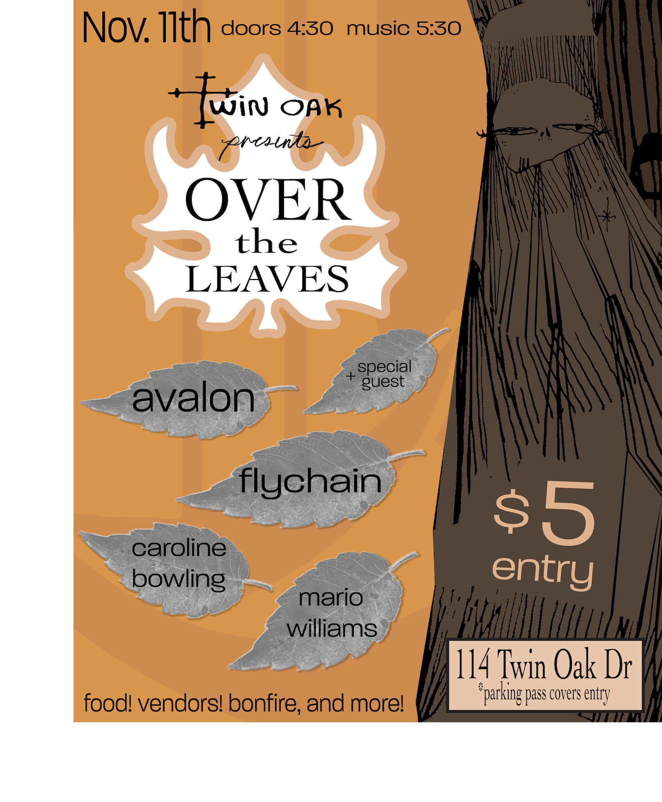
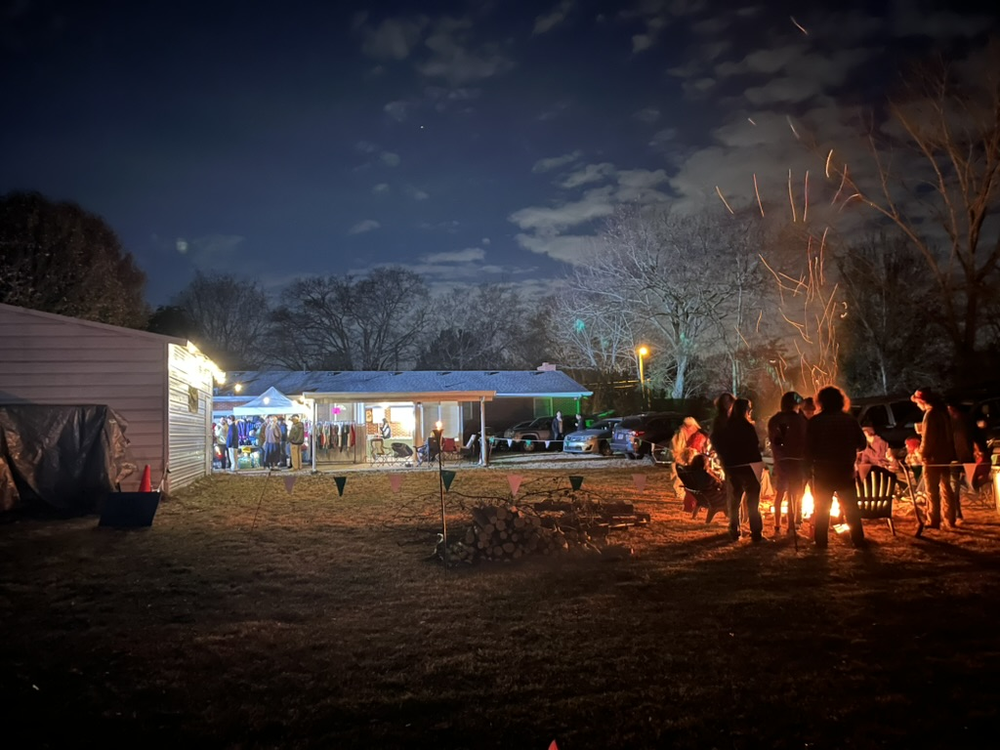
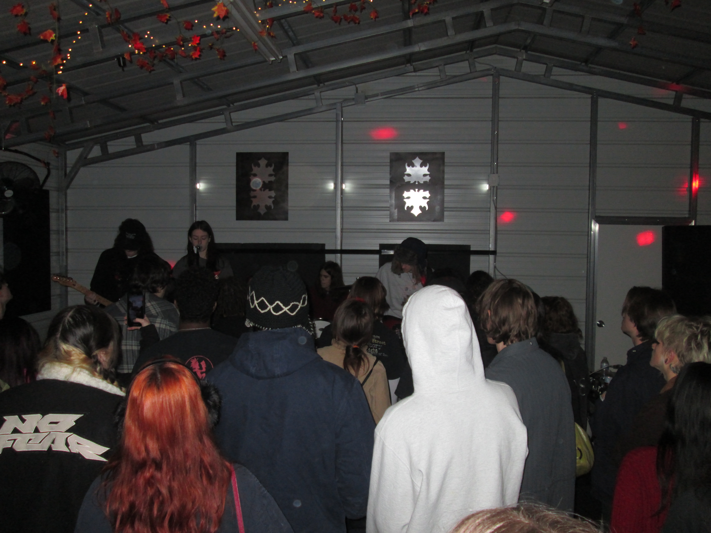

DIY concert
Over the Leaves
A DIY concert built around community, local bands, and creative collaboration. I coordinated logistics, promotion, and on-site execution with artists and partners.
The night became our highest-attended event, with 140 tickets sold at the door, plus hot cider, s’mores, and desserts made for the crowd.



Video recap